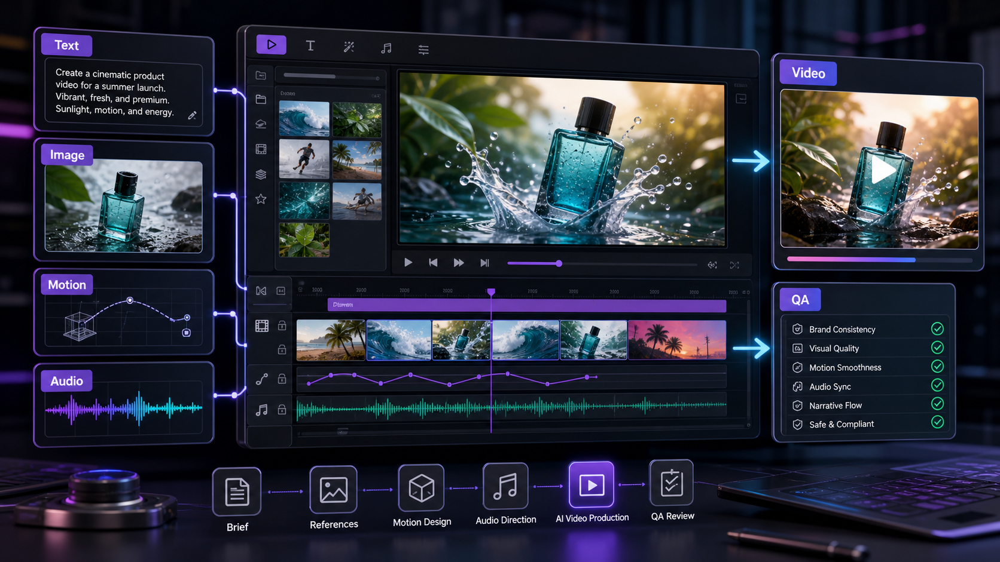

SEEDANCE 2 GUIDE
How to use Seedance 2 for multimodal AI video production.
Use this guide to turn text prompts, product images, motion references, and audio direction into clearer video briefs for ChatArt Pro.

Summary for fast readers
- Multimodal video workflows need clear inputs: text brief, product/reference image, style frame, camera motion, audio direction, and review criteria.
- Use Seedance-style planning for campaign clips where continuity, pacing, product framing, and final CTA space matter.
- Before publishing, verify motion continuity, product details, text overlays, aspect ratio, audio fit, and commercial-use terms.
WHAT IT SOLVES
Seedance 2 helps bridge the gap between a creative brief and a video direction.
For creators and marketing teams, the hard part is rarely asking for "a video." The hard part is translating brand mood, product references, movement, pacing, and platform needs into a model-ready brief. Seedance 2 is useful when the idea needs more than text: a product image, a target shot style, a motion sample, or an audio rhythm can all help narrow the result.
WHO THIS IS FOR
Use it when you need campaign-ready video assets, not just experiments.
Creators
Build short-form hooks, cinematic B-roll, storytelling clips, cover videos, and reference-led social posts from one content idea.
Marketers
Turn campaign briefs into product reveals, feature demos, launch teasers, ad concepts, and supporting visual directions.
Brand teams
Use reference material to keep mood, color, character styling, and product treatment closer to the intended direction.
Growth teams
Draft multiple creative routes quickly, then keep the winning direction consistent across video, thumbnail, caption, and ad copy.
INPUTS
Think in four inputs: text, image, video, and audio.
| Input | What it controls | Best use in a creator or marketing workflow |
|---|---|---|
| Text prompt | Scene, subject, action, camera movement, mood, pacing, and output purpose. | Use it to define the campaign angle, audience, platform, and final frame. |
| Image reference | Product look, character styling, composition, color palette, or visual identity. | Use it for product launches, creator avatars, thumbnails, and brand-consistent scenes. |
| Video reference | Motion language, shot rhythm, action example, camera movement, or transition style. | Use it when a team needs to show the model what a movement should feel like. |
| Audio direction | Tempo, emotional rhythm, music mood, voice energy, or pacing expectation. | Use it when the video must match a launch mood, social trend, or edit rhythm. |
PROMPT FRAMEWORK
Write prompts like a small production brief.
A strong Seedance 2 prompt should describe the asset job, not only the subject. Start with what the video needs to do, then add references and constraints.
- Goal: Say whether this is a launch teaser, product reveal, social hook, founder story, feature clip, or ad concept.
- Subject: Define the product, person, scene, or object that must stay recognizable.
- Reference: Mention which image, video, or audio input should guide style, motion, or pacing.
- Shot direction: Add lens, camera move, lighting, setting, action, and ending frame.
- Delivery context: Add platform, aspect ratio need, caption space, brand mood, and what the viewer should feel.
PROMPT EXAMPLES
Seedance 2 prompt starters for ChatArt Pro.
Create a cinematic 4K product launch teaser for [product]. Use the uploaded product image as the hero reference. Slow dolly-in, soft rim light, premium studio surface, subtle particle glow, confident mood, final frame leaves clean space for launch headline text.
Create a vertical social video opening with [creator/persona] reacting to [problem]. Fast first-second hook, handheld realism, warm natural light, energetic pacing, end with a visual reveal of [solution/product]. Keep the tone useful, not overly polished.
Use the uploaded video as the camera-motion reference. Keep the movement smooth and forward-tracking, but replace the scene with [new environment]. Maintain subject continuity, realistic lighting, and a final close-up suitable for an ad thumbnail.
Create a brand video matching the mood of the uploaded audio: [calm / bold / futuristic / playful]. Visual rhythm should follow the beat, with three clear moments: opening atmosphere, product detail, and final brand hold.
WORKFLOW
A practical Seedance 2 workflow inside ChatArt Pro.
- Start with one campaign message. Write the promise, audience, product proof, and desired emotion before generating.
- Add references only when they help. Use a product image for visual accuracy, a motion clip for camera behavior, or audio for pacing.
- Generate a short proof first. Check subject consistency, motion quality, mood, composition, and whether the final frame supports text.
- Create platform variants. Once the direction works, adapt it for vertical social, ad previews, landing-page hero clips, or launch countdown posts.
- Build the surrounding asset pack. Pair the video with a thumbnail, caption, hook copy, music direction, and ad variants in ChatArt Pro.
USE CASES
Where Seedance 2 fits best.
Product reveal clips
Use product imagery as a reference and prompt for lighting, surface, camera movement, and final logo space.
Creator storytelling
Turn one idea into a short emotional scene, then reuse the same premise for captions, hooks, and thumbnail text.
Ad concept testing
Draft multiple visual routes for the same offer: premium, playful, educational, urgent, or founder-led.
Music-led campaign videos
Use audio direction to shape pace and mood when the asset must feel native to social feeds.
MODEL CHOICE
When to choose Seedance 2 instead of another video route.
Choose Seedance 2 when references and direction matter. If you only need fast exploratory drafts, compare it with Kling O3 Mini. If you are deciding between video routes for a launch campaign, use the Seedance 2 vs Kling O3 Mini comparison.
COMMON MISTAKES
Avoid these Seedance 2 prompt mistakes.
Too many goals
One clip should usually do one job: hook, reveal, explain, compare, or close. Split complex ideas into a sequence.
Unclear reference roles
If you upload multiple references, explain which one controls product look, which one controls motion, and which one controls mood.
No final frame plan
Marketing clips often need headline or CTA space. Ask for a final hold with clean composition.
Skipping proof clips
For client or launch work, test a short version before scaling into more variants.
FAQ
Seedance 2 questions for creators and marketers.
Is Seedance 2 only for text-to-video?
No. Public Seedance 2 materials describe a multimodal direction that can work with text, image, video, and audio references. In a production workflow, that matters because references can communicate style and motion more clearly than text alone.
What should I prepare before using Seedance 2?
Prepare a short campaign message, the intended platform, a visual reference if consistency matters, and a clear description of the camera movement and final frame.
Can Seedance 2 help with ad creative testing?
Yes. It is useful for drafting different visual angles for the same offer, then pairing the best video route with thumbnails, captions, hooks, and ad copy in ChatArt Pro.
Should I use Seedance 2 or Kling O3 Mini?
Use Seedance 2 when reference-led direction and multimodal control matter. Use Kling O3 Mini when the priority is fast 4K exploration and many draft variants. For a deeper decision, see the comparison page linked above.
MULTIMODAL INPUTS
Better inputs create more controllable video outputs.
Text prompts alone often leave too much room for interpretation. A stronger workflow combines a written brief with visual references, motion notes, audio mood, and a QA checklist. This gives the video model clearer constraints and gives the marketer a better way to judge the result.
| Input | Use it for | Review question |
|---|---|---|
| Text brief | Audience, promise, product, CTA. | Does the clip answer the intended audience problem? |
| Image reference | Product look, character, scene, style. | Are key details preserved? |
| Motion note | Camera path, pacing, transition. | Does motion support the story? |
| Audio direction | Mood, rhythm, spoken or music cues. | Does sound match the channel and message? |
CREATE WITH THE GUIDE
Turn this Seedance 2 workflow into actual campaign assets.
Open ChatArt Pro with one message, one reference, and one platform goal. Then generate the video, thumbnail, caption, and ad-copy variants around the same creative direction.